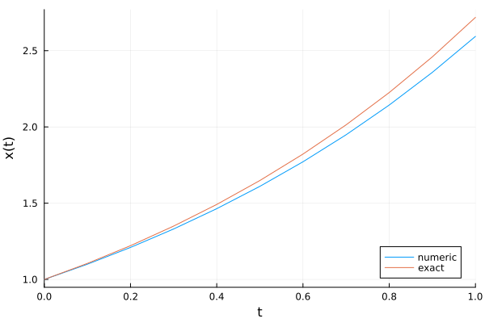
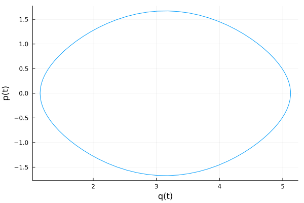

Tutorial
In this tutorial, we try to give an overview of the basic usage of GeometricIntegrators and its main components.
Installation
GeometricIntegrators.jl can be installed using Julia's built-in package manager in the command line interface by
julia> ]
(v1.9) pkg> add GeometricIntegratorsIn a Jupyter notebook, GeometricIntegrators.jl can be installed by explicitly using the Pkg module as
using Pkg
Pkg.add("GeometricIntegrators")This will install the library itself as well as all dependencies.
Basic usage
In the simplest cases, the use of GeometricIntegrators.jl requires the construction of two objects, an equation and an integrator. For many standard methods, the integrator is implicitly selected by specifying an equation and a tableau.
Before any use, we need to load GeometricIntegrators,
using GeometricIntegratorsThen we can create an ODE object for the equation $\dot{x} (t) = x(t)$ with initial condition $x(0) = 1$, integration time span $(0, 1)$ and a time step of $\Delta t = 0.1$,
prob = ODEProblem((ẋ, t, x, params) -> ẋ[1] = x[1], (0.0, 1.0), 0.1, [1.0])Geometric Equation Problem for Ordinary Differential Equation (ODE)
with vector field
v = #1
Invariants:
NullInvariants()
Timespan: (0.0, 1.0)
Timestep: 0.1
Initial conditions:
(t = 0.0, q = [1.0])
Parameters:
NullParameters()create an integrator for this ODE, using the explicit Euler method
int = GeometricIntegrator(prob, ExplicitEuler())GeometricIntegrator{ExplicitEuler, ODEProblem{Float64, Float64, Vector{Float64}, ODE{Main.var"#1#2", NullInvariants, NullParameters, NullPeriodicity}, @NamedTuple{v::Main.var"#1#2"}, @NamedTuple{}, @NamedTuple{q::Vector{Float64}}, NullParameters}, GeometricIntegrators.Integrators.CacheDict{ODEProblem{Float64, Float64, Vector{Float64}, ODE{Main.var"#1#2", NullInvariants, NullParameters, NullPeriodicity}, @NamedTuple{v::Main.var"#1#2"}, @NamedTuple{}, @NamedTuple{q::Vector{Float64}}, NullParameters}, ExplicitEuler}, NoSolver, NoInitialGuess, SolutionStepODE{Float64, Float64, Vector{Float64}, Vector{Float64}, @NamedTuple{t::OffsetArrays.OffsetVector{Float64, Vector{Float64}}, q::OffsetArrays.OffsetVector{Vector{Float64}, Vector{Vector{Float64}}}, v::OffsetArrays.OffsetVector{Vector{Float64}, Vector{Vector{Float64}}}}, @NamedTuple{}, NullParameters, 2}}(Geometric Equation Problem for Ordinary Differential Equation (ODE)
with vector field
v = #1
Invariants:
NullInvariants()
Timespan: (0.0, 1.0)
Timestep: 0.1
Initial conditions:
(t = 0.0, q = [1.0])
Parameters:
NullParameters(), ExplicitEuler(), GeometricIntegrators.Integrators.CacheDict{ODEProblem{Float64, Float64, Vector{Float64}, ODE{Main.var"#1#2", NullInvariants, NullParameters, NullPeriodicity}, @NamedTuple{v::Main.var"#1#2"}, @NamedTuple{}, @NamedTuple{q::Vector{Float64}}, NullParameters}, ExplicitEuler}(Geometric Equation Problem for Ordinary Differential Equation (ODE)
with vector field
v = #1
Invariants:
NullInvariants()
Timespan: (0.0, 1.0)
Timestep: 0.1
Initial conditions:
(t = 0.0, q = [1.0])
Parameters:
NullParameters(), ExplicitEuler(), Dict{UInt64, IntegratorCache}()), NoSolver(), NoInitialGuess(), SolutionStepODE{Float64, Float64, Vector{Float64}, Vector{Float64}, @NamedTuple{t::OffsetArrays.OffsetVector{Float64, Vector{Float64}}, q::OffsetArrays.OffsetVector{Vector{Float64}, Vector{Vector{Float64}}}, v::OffsetArrays.OffsetVector{Vector{Float64}, Vector{Vector{Float64}}}}, @NamedTuple{}, NullParameters, 2}([1.0], [1.0], [0.9048374180359585], [0.9048374180359585], [0.0], (t = [0.0, -0.1, -0.2], q = [[1.0], [0.9048374180359585], [0.8187307530779814]], v = [[1.0], [0.9048374180359585], [0.8187307530779814]]), NamedTuple(), NullParameters()))and compute the solution,
sol = integrate(int)GeometricSolution{Float64, Float64, @NamedTuple{q::DataSeries{Float64, Vector{Float64}}}, ODEProblem{Float64, Float64, Vector{Float64}, ODE{Main.var"#1#2", NullInvariants, NullParameters, NullPeriodicity}, @NamedTuple{v::Main.var"#1#2"}, @NamedTuple{}, @NamedTuple{q::Vector{Float64}}, NullParameters}, @NamedTuple{q::NullPeriodicity}}([0.0, 0.1, 0.2, 0.3, 0.4, 0.5, 0.6, 0.7, 0.8, 0.9, 1.0], (q = DataSeries{Float64, Vector{Float64}} with data type Float64 and array type Vector{Float64}
[[1.0], [1.1], [1.2100000000000002], [1.3310000000000002], [1.4641000000000002], [1.61051], [1.7715610000000002], [1.9487171], [2.1435888100000002], [2.357947691], [2.5937424601]],), Geometric Equation Problem for Ordinary Differential Equation (ODE)
with vector field
v = #1
Invariants:
NullInvariants()
Timespan: (0.0, 1.0)
Timestep: 0.1
Initial conditions:
(t = 0.0, q = [1.0])
Parameters:
NullParameters(), (q = NullPeriodicity(),), 1, 10, 0)Plot and compare with the exact solution
using Plots
plot(xlims=[0,1], xlab="t", ylab="x(t)", legend=:bottomright)
plot!(sol.t, sol.q[:,1], label="numeric")
plot!(sol.t, exp.(sol.t), label="exact")"/home/runner/work/GeometricIntegrators.jl/GeometricIntegrators.jl/docs/build/images/tutorial-ode-1.png"
Equations
In GeometricIntegrators.jl we distinguish between three basic types of equations:
- ordinary differential equations (ODEs),
- differential algebraic equations (DAEs),
- stochastic differential equations (SDEs).
For each type, there are several subtypes
- standard equations (
ODEProblem,DAEProblem,SDEProblem), - implicit equations (
IODEProblem,IDAEProblem), - partitioned equations (
PODEProblem,PDAEProblem,PSDEProblem), - Hamiltonian equations (
HODEProblem,HDAEProblem), - Lagrangian equations (
LODEProblem,LDAEProblem), - split equations (
SODEProblem,SPDAEProblem,SPSDEProblem).
Ordinary differential equations
Consider an ODE of the form
\[\dot{x} (t) = v(t, x(t)) ,\]
where $\dot{x}$ denotes the derivative of $x$ and $f$ the vector field of the equation, which is assumed to depend on both $t$ and $x$. In the following, we will solve the mathematical pendulum, whose equations are given by
\[\begin{pmatrix} \dot{x}_1 \\ \dot{x}_2 \\ \end{pmatrix} = \begin{pmatrix} x_2 \\ \sin (x_1) \\ \end{pmatrix} .\]
Together with the integration time span (t₀,t₁) and the time step, an ODE defines an ODEProblem.
The user needs to specify a function ẋ that computes the vector field and must have the interface
function ẋ(v, t, x, params)
v[1] = ...
v[2] = ...
...
endwhere t is the current time, q is the current solution vector, v is the vector which holds the result of evaluating the vector field $v$ on t and q, and params is a NamedTuple of constant parameters on which the vector field may depend.
For the mathematical pendulum, this could look as follows:
function ẋ(v, t, x, params)
v[1] = x[2]
v[2] = sin(x[1])
endẋ (generic function with 1 method)An ODEProblem is instantiated by
ODEProblem(<vector field>, <time span>, <time step>, <initial conditions>; kwargs...)so to create and ODEProblem, one only needs to pass the above function ẋ, a tuple tspan containing the start and end times of the integration, the time step tstep as well as an initial condition:
tspan = (0.0, 10.0)
tstep = 0.1
x₀ = [acos(0.4), 0.0]
ode = ODEProblem(ẋ, tspan, tstep, x₀)Geometric Equation Problem for Ordinary Differential Equation (ODE)
with vector field
v = ẋ
Invariants:
NullInvariants()
Timespan: (0.0, 10.0)
Timestep: 0.1
Initial conditions:
(t = 0.0, q = [1.1592794807274085, 0.0])
Parameters:
NullParameters()The full constructor would look like
ode = ODEProblem(ẋ, tspan, tstep, x₀; invariants = NullInvariants(),
parameters = NullParameters(), periodicity = NullPeriodicity())Geometric Equation Problem for Ordinary Differential Equation (ODE)
with vector field
v = ẋ
Invariants:
NullInvariants()
Timespan: (0.0, 10.0)
Timestep: 0.1
Initial conditions:
(t = 0.0, q = [1.1592794807274085, 0.0])
Parameters:
NullParameters()where all keyword arguments, namely invariants, parameters and periodicity, are by default initialized to be absent.
Partitioned ordinary differential equations
The pendulum problem is a Hamiltonian system that can also be expressed as
\[\dot{q} = \frac{\partial H}{\partial p} = p , \hspace{3em} \dot{p} = - \frac{\partial H}{\partial q} = \sin (q) , \hspace{3em} H (q,p) = \frac{1}{2} p^2 + \cos (q) .\]
This structure, namely the partitioning into two sets of variables $(q,p)$ instead of $x$, can be exploited for more efficient integration. Such equations can be defined in terms of a partitioned ODE, where the vector fields are specified separately,
function q̇(v, t, q, p, params)
v[1] = p[1]
end
function ṗ(f, t, q, p, params)
f[1] = sin(q[1])
end
pode = PODEProblem(q̇, ṗ, (0.0, 25.0), 0.1, [acos(0.4)], [0.0])Geometric Equation Problem for Partitioned Ordinary Differential Equation (PODE)
with vector fields
v = q̇
f = ṗ
Invariants:
NullInvariants()
Timespan: (0.0, 25.0)
Timestep: 0.1
Initial conditions:
(t = 0.0, q = [1.1592794807274085], p = [0.0])
Parameters:
NullParameters()The first two arguments to the PODE constructor are the functions that determine the vector fields of the equations $\dot{q} (t) = v(t, q(t), p(t))$ and $\dot{p} (t) = f(t, q(t), p(t))$. The third and fourth argument determines the initial conditions of $q$ and $p$, respectively. The functions defining the vector field have to take four arguments, the current time t, the current solution vectors q and p and the output vector v or f.
Integrators
We support a number of standard integrators (geometric and non-geometric) like explicit, implicit and partitioned Runge-Kutta methods, splitting methods and general linear methods (planned).
In order to instantiate many of the standard integrators, one needs to specify an ODEProblem, a method and a timestep, e.g.,
int = GeometricIntegrator(ode, ExplicitEuler())GeometricIntegrator{ExplicitEuler, ODEProblem{Float64, Float64, Vector{Float64}, ODE{typeof(Main.ẋ), NullInvariants, NullParameters, NullPeriodicity}, @NamedTuple{v::typeof(Main.ẋ)}, @NamedTuple{}, @NamedTuple{q::Vector{Float64}}, NullParameters}, GeometricIntegrators.Integrators.CacheDict{ODEProblem{Float64, Float64, Vector{Float64}, ODE{typeof(Main.ẋ), NullInvariants, NullParameters, NullPeriodicity}, @NamedTuple{v::typeof(Main.ẋ)}, @NamedTuple{}, @NamedTuple{q::Vector{Float64}}, NullParameters}, ExplicitEuler}, NoSolver, NoInitialGuess, SolutionStepODE{Float64, Float64, Vector{Float64}, Vector{Float64}, @NamedTuple{t::OffsetArrays.OffsetVector{Float64, Vector{Float64}}, q::OffsetArrays.OffsetVector{Vector{Float64}, Vector{Vector{Float64}}}, v::OffsetArrays.OffsetVector{Vector{Float64}, Vector{Vector{Float64}}}}, @NamedTuple{}, NullParameters, 2}}(Geometric Equation Problem for Ordinary Differential Equation (ODE)
with vector field
v = ẋ
Invariants:
NullInvariants()
Timespan: (0.0, 10.0)
Timestep: 0.1
Initial conditions:
(t = 0.0, q = [1.1592794807274085, 0.0])
Parameters:
NullParameters(), ExplicitEuler(), GeometricIntegrators.Integrators.CacheDict{ODEProblem{Float64, Float64, Vector{Float64}, ODE{typeof(Main.ẋ), NullInvariants, NullParameters, NullPeriodicity}, @NamedTuple{v::typeof(Main.ẋ)}, @NamedTuple{}, @NamedTuple{q::Vector{Float64}}, NullParameters}, ExplicitEuler}(Geometric Equation Problem for Ordinary Differential Equation (ODE)
with vector field
v = ẋ
Invariants:
NullInvariants()
Timespan: (0.0, 10.0)
Timestep: 0.1
Initial conditions:
(t = 0.0, q = [1.1592794807274085, 0.0])
Parameters:
NullParameters(), ExplicitEuler(), Dict{UInt64, IntegratorCache}()), NoSolver(), NoInitialGuess(), SolutionStepODE{Float64, Float64, Vector{Float64}, Vector{Float64}, @NamedTuple{t::OffsetArrays.OffsetVector{Float64, Vector{Float64}}, q::OffsetArrays.OffsetVector{Vector{Float64}, Vector{Vector{Float64}}}, v::OffsetArrays.OffsetVector{Vector{Float64}, Vector{Vector{Float64}}}}, @NamedTuple{}, NullParameters, 2}([1.1592794807274085, 0.0], [0.0, 0.916515138991168], [1.1638635809409579, -0.09171243446016944], [-0.09171243446016944, 0.9183391428584442], [0.0, 0.0], (t = [0.0, -0.1, -0.2], q = [[1.1592794807274085, 0.0], [1.1638635809409579, -0.09171243446016944], [1.1776340310073226, -0.18378604239732177]], v = [[0.0, 0.916515138991168], [-0.09171243446016944, 0.9183391428584442], [-0.18378604239732177, 0.923702169043022]]), NamedTuple(), NullParameters()))In order to run the integrator, the integrate() functions is called, passing an integrator object and the number of time steps to integrate:
sol = integrate(int)GeometricSolution{Float64, Float64, @NamedTuple{q::DataSeries{Float64, Vector{Float64}}}, ODEProblem{Float64, Float64, Vector{Float64}, ODE{typeof(Main.ẋ), NullInvariants, NullParameters, NullPeriodicity}, @NamedTuple{v::typeof(Main.ẋ)}, @NamedTuple{}, @NamedTuple{q::Vector{Float64}}, NullParameters}, @NamedTuple{q::NullPeriodicity}}([0.0, 0.1, 0.2, 0.3, 0.4, 0.5, 0.6, 0.7, 0.8, 0.9 … 9.1, 9.2, 9.3, 9.4, 9.5, 9.6, 9.7, 9.8, 9.9, 10.0], (q = DataSeries{Float64, Vector{Float64}} with data type Float64 and array type Vector{Float64}
[[1.1592794807274085, 0.0], [1.1592794807274085, 0.0916515138991168], [1.16844463211732, 0.1833030277982336], [1.1867749348971435, 0.27531729328384535], [1.214306664225528, 0.36803384468818096], [1.251110048694346, 0.4617466103173175], [1.2972847097260778, 0.5566800160960343], [1.3529527113356812, 0.6529628458243084], [1.418248995918112, 0.7505994225236635], [1.4933089381704783, 0.8494381427201427] … [0.43060324588079135, -0.41420434937853495], [0.38918281094293783, -0.372462443739593], [0.35193656656897854, -0.33451919746956543], [0.318484646822022, -0.3000475653568675], [0.28847989028633525, -0.2687347880478269], [0.26160641148155256, -0.2402852621015313], [0.23757788527139942, -0.21442199815398566], [0.21613568545600084, -0.19088707420851603], [0.19704697803514923, -0.1694413913726895], [0.18010283889788029, -0.14986396030881768]],), Geometric Equation Problem for Ordinary Differential Equation (ODE)
with vector field
v = ẋ
Invariants:
NullInvariants()
Timespan: (0.0, 10.0)
Timestep: 0.1
Initial conditions:
(t = 0.0, q = [1.1592794807274085, 0.0])
Parameters:
NullParameters(), (q = NullPeriodicity(),), 1, 100, 0)The integrate function automatically creates an appropriate solution object, that contains the result of the integration.
plot(sol.q[:,1], sol.q[:,2], xlab="x(t)", ylab="y(t)", legend=:none)
Observe that the explicit Euler method is not well suited for integrating this system. The solutions drifts away although it should follow closed orbits.
For a Hamiltonian system, defined as a PODE, a different methods might be more appropriate, for example a symplectic Euler method,
sol = integrate(pode, LobattoIIIAIIIB(2))GeometricSolution{Float64, Float64, @NamedTuple{q::DataSeries{Float64, Vector{Float64}}, p::DataSeries{Float64, Vector{Float64}}}, PODEProblem{Float64, Float64, Vector{Float64}, PODE{typeof(Main.q̇), typeof(Main.ṗ), NullInvariants, NullParameters, NullPeriodicity}, @NamedTuple{v::typeof(Main.q̇), f::typeof(Main.ṗ)}, @NamedTuple{}, @NamedTuple{q::Vector{Float64}, p::Vector{Float64}}, NullParameters}, @NamedTuple{q::NullPeriodicity, p::NullPeriodicity}}([0.0, 0.1, 0.2, 0.3, 0.4, 0.5, 0.6, 0.7, 0.8, 0.9 … 24.1, 24.2, 24.3, 24.4, 24.5, 24.6, 24.7, 24.8, 24.9, 25.0], (q = DataSeries{Float64, Vector{Float64}} with data type Float64 and array type Vector{Float64}
[[1.1592794807274085], [1.1638620564223643], [1.1776280175119345], [1.2006309772533847], [1.2329566123939881], [1.274716976459509], [1.326042218273944], [1.3870694294701484], [1.4579283370345948], [1.5387236162742652] … [1.4573386548542961], [1.3865567080330286], [1.3256055195712892], [1.2743552413676893], [1.232668784844055], [1.200416102851003], [1.1774853186916536], [1.1637909863868432], [1.1592797581612286], [1.1639336824352609]], p = DataSeries{Float64, Vector{Float64}} with data type Float64 and array type Vector{Float64}
[[0.0], [0.09174268392263003], [0.1838446041551023], [0.2766429744102676], [0.3704299960306214], [0.46542802939977923], [0.5617622650531964], [0.6594305938032541], [0.7582709340205849], [0.8579270781320831] … [-0.7574979972001628], [-0.6586656764150336], [-0.5610073333266961], [-0.4646836736361716], [-0.3696956925834313], [-0.27591733076200736], [-0.18312558232079995], [-0.0910278026521241], [0.0007134802420892053], [0.09245758705941562]]), Geometric Equation Problem for Partitioned Ordinary Differential Equation (PODE)
with vector fields
v = q̇
f = ṗ
Invariants:
NullInvariants()
Timespan: (0.0, 25.0)
Timestep: 0.1
Initial conditions:
(t = 0.0, q = [1.1592794807274085], p = [0.0])
Parameters:
NullParameters(), (q = NullPeriodicity(), p = NullPeriodicity()), 1, 250, 0)This creates a different integrator, which exploits the partitioned structure of the system. The solution return by the integrate step will also be a different solution, adapted to the partitioned system.
plot(sol.q[:,1], sol.p[:,1], xlab="q(t)", ylab="p(t)", legend=:none)
Moreover, this method respects the Hamiltonian structure of the system, resulting in closed orbits following the contours of the system's energy.
Overview of Available Methods
GeometricIntegrators.jl provides a plethora of geometric integrators as well as non-geometric integrators (mainly for testing and benchmarking purposes). Most integrators can be selected by a simple method type, which also stores parameters. Some integrator families can also be selected by specifying a tableau, that is a Butcher tableau for Runge-Kutta methods, a pair of tableaus for partitioned Runge-Kutta and VPRK methods, or generalizations thereof for SPARK methods. Other integrators, such as Galerkin variational integrators require the specification of a basis and a quadrature rule.
The correct integrator is automatically selected based on the method and problem types by calling
GeometricIntegrator(problem, method)As an example, consider an ODE like the harmonic oscillator, which is included in GeometricEquations.jl:
using GeometricIntegrators
using GeometricProblems.HarmonicOscillatorprob = HarmonicOscillator.odeproblem()Geometric Equation Problem for Ordinary Differential Equation (ODE)
with vector field
v = oscillator_ode_v
Invariants:
(h = GeometricProblems.HarmonicOscillator.hamiltonian,)
Timespan: (0.0, 1.0)
Timestep: 0.1
Initial conditions:
(t = 0.0, q = [0.5, 0.0])
Parameters:
(k = 0.5, ω = 0.7071067811865476)Create an explicit Euler method:
method = ExplicitEuler()ExplicitEuler()And now create an Integrator with the general Integrator constructor:
int = GeometricIntegrator(prob, method)GeometricIntegrator{ExplicitEuler, ODEProblem{Float64, Float64, Vector{Float64}, ODE{typeof(GeometricProblems.HarmonicOscillator.oscillator_ode_v), @NamedTuple{h::typeof(GeometricProblems.HarmonicOscillator.hamiltonian)}, @NamedTuple{k::DataType, ω::DataType}, NullPeriodicity}, @NamedTuple{v::typeof(GeometricProblems.HarmonicOscillator.oscillator_ode_v)}, @NamedTuple{}, @NamedTuple{q::Vector{Float64}}, @NamedTuple{k::Float64, ω::Float64}}, GeometricIntegrators.Integrators.CacheDict{ODEProblem{Float64, Float64, Vector{Float64}, ODE{typeof(GeometricProblems.HarmonicOscillator.oscillator_ode_v), @NamedTuple{h::typeof(GeometricProblems.HarmonicOscillator.hamiltonian)}, @NamedTuple{k::DataType, ω::DataType}, NullPeriodicity}, @NamedTuple{v::typeof(GeometricProblems.HarmonicOscillator.oscillator_ode_v)}, @NamedTuple{}, @NamedTuple{q::Vector{Float64}}, @NamedTuple{k::Float64, ω::Float64}}, ExplicitEuler}, NoSolver, NoInitialGuess, SolutionStepODE{Float64, Float64, Vector{Float64}, Vector{Float64}, @NamedTuple{t::OffsetArrays.OffsetVector{Float64, Vector{Float64}}, q::OffsetArrays.OffsetVector{Vector{Float64}, Vector{Vector{Float64}}}, v::OffsetArrays.OffsetVector{Vector{Float64}, Vector{Vector{Float64}}}}, @NamedTuple{}, @NamedTuple{k::Float64, ω::Float64}, 2}}(Geometric Equation Problem for Ordinary Differential Equation (ODE)
with vector field
v = oscillator_ode_v
Invariants:
(h = GeometricProblems.HarmonicOscillator.hamiltonian,)
Timespan: (0.0, 1.0)
Timestep: 0.1
Initial conditions:
(t = 0.0, q = [0.5, 0.0])
Parameters:
(k = 0.5, ω = 0.7071067811865476), ExplicitEuler(), GeometricIntegrators.Integrators.CacheDict{ODEProblem{Float64, Float64, Vector{Float64}, ODE{typeof(GeometricProblems.HarmonicOscillator.oscillator_ode_v), @NamedTuple{h::typeof(GeometricProblems.HarmonicOscillator.hamiltonian)}, @NamedTuple{k::DataType, ω::DataType}, NullPeriodicity}, @NamedTuple{v::typeof(GeometricProblems.HarmonicOscillator.oscillator_ode_v)}, @NamedTuple{}, @NamedTuple{q::Vector{Float64}}, @NamedTuple{k::Float64, ω::Float64}}, ExplicitEuler}(Geometric Equation Problem for Ordinary Differential Equation (ODE)
with vector field
v = oscillator_ode_v
Invariants:
(h = GeometricProblems.HarmonicOscillator.hamiltonian,)
Timespan: (0.0, 1.0)
Timestep: 0.1
Initial conditions:
(t = 0.0, q = [0.5, 0.0])
Parameters:
(k = 0.5, ω = 0.7071067811865476), ExplicitEuler(), Dict{UInt64, IntegratorCache}()), NoSolver(), NoInitialGuess(), SolutionStepODE{Float64, Float64, Vector{Float64}, Vector{Float64}, @NamedTuple{t::OffsetArrays.OffsetVector{Float64, Vector{Float64}}, q::OffsetArrays.OffsetVector{Vector{Float64}, Vector{Vector{Float64}}}, v::OffsetArrays.OffsetVector{Vector{Float64}, Vector{Vector{Float64}}}}, @NamedTuple{}, @NamedTuple{k::Float64, ω::Float64}, 2}([0.5, 0.0], [0.0, -0.25], [0.4987505207465359, 0.02497917187437998], [0.02497917187437998, -0.24937526037326796], [0.0, 0.0], (t = [0.0, -0.1, -0.2], q = [[0.5, 0.0], [0.4987505207465359, 0.02497917187437998], [0.4950083277797609, 0.049833499920656894]], v = [[0.0, -0.25], [0.02497917187437998, -0.24937526037326796], [0.049833499920656894, -0.24750416388988045]]), NamedTuple(), (k = 0.5, ω = 0.7071067811865476)))We see that we obtained an IntegratorERK, i.e., an explicit Runge-Kutta integrator. If instead we choose the implicit Euler method:
method = ImplicitEuler()ImplicitEuler()the general Integrator constructor creates a different integrator:
int = GeometricIntegrator(prob, method)GeometricIntegrator{ImplicitEuler, ODEProblem{Float64, Float64, Vector{Float64}, ODE{typeof(GeometricProblems.HarmonicOscillator.oscillator_ode_v), @NamedTuple{h::typeof(GeometricProblems.HarmonicOscillator.hamiltonian)}, @NamedTuple{k::DataType, ω::DataType}, NullPeriodicity}, @NamedTuple{v::typeof(GeometricProblems.HarmonicOscillator.oscillator_ode_v)}, @NamedTuple{}, @NamedTuple{q::Vector{Float64}}, @NamedTuple{k::Float64, ω::Float64}}, GeometricIntegrators.Integrators.CacheDict{ODEProblem{Float64, Float64, Vector{Float64}, ODE{typeof(GeometricProblems.HarmonicOscillator.oscillator_ode_v), @NamedTuple{h::typeof(GeometricProblems.HarmonicOscillator.hamiltonian)}, @NamedTuple{k::DataType, ω::DataType}, NullPeriodicity}, @NamedTuple{v::typeof(GeometricProblems.HarmonicOscillator.oscillator_ode_v)}, @NamedTuple{}, @NamedTuple{q::Vector{Float64}}, @NamedTuple{k::Float64, ω::Float64}}, ImplicitEuler}, SimpleSolvers.NewtonSolver{Float64, Vector{Float64}, SimpleSolvers.JacobianAutodiff{Float64, ForwardDiff.JacobianConfig{Nothing, Float64, 2, Tuple{Vector{ForwardDiff.Dual{Nothing, Float64, 2}}, Vector{ForwardDiff.Dual{Nothing, Float64, 2}}}}, Vector{Float64}}, SimpleSolvers.LUSolver{Float64}, SimpleSolvers.BacktrackingState{SimpleSolvers.Options{Float64}, Float64}}, HermiteExtrapolation, SolutionStepODE{Float64, Float64, Vector{Float64}, Vector{Float64}, @NamedTuple{t::OffsetArrays.OffsetVector{Float64, Vector{Float64}}, q::OffsetArrays.OffsetVector{Vector{Float64}, Vector{Vector{Float64}}}, v::OffsetArrays.OffsetVector{Vector{Float64}, Vector{Vector{Float64}}}}, @NamedTuple{}, @NamedTuple{k::Float64, ω::Float64}, 2}}(Geometric Equation Problem for Ordinary Differential Equation (ODE)
with vector field
v = oscillator_ode_v
Invariants:
(h = GeometricProblems.HarmonicOscillator.hamiltonian,)
Timespan: (0.0, 1.0)
Timestep: 0.1
Initial conditions:
(t = 0.0, q = [0.5, 0.0])
Parameters:
(k = 0.5, ω = 0.7071067811865476), ImplicitEuler(), GeometricIntegrators.Integrators.CacheDict{ODEProblem{Float64, Float64, Vector{Float64}, ODE{typeof(GeometricProblems.HarmonicOscillator.oscillator_ode_v), @NamedTuple{h::typeof(GeometricProblems.HarmonicOscillator.hamiltonian)}, @NamedTuple{k::DataType, ω::DataType}, NullPeriodicity}, @NamedTuple{v::typeof(GeometricProblems.HarmonicOscillator.oscillator_ode_v)}, @NamedTuple{}, @NamedTuple{q::Vector{Float64}}, @NamedTuple{k::Float64, ω::Float64}}, ImplicitEuler}(Geometric Equation Problem for Ordinary Differential Equation (ODE)
with vector field
v = oscillator_ode_v
Invariants:
(h = GeometricProblems.HarmonicOscillator.hamiltonian,)
Timespan: (0.0, 1.0)
Timestep: 0.1
Initial conditions:
(t = 0.0, q = [0.5, 0.0])
Parameters:
(k = 0.5, ω = 0.7071067811865476), ImplicitEuler(), Dict{UInt64, IntegratorCache}(0x53eebc94077f23ab => GeometricIntegrators.Integrators.ImplicitEulerCache{Float64, 2}([0.0, 0.0], [0.0, 0.0], [0.0, 0.0], [0.0, 0.0], [0.0, 0.0]))), SimpleSolvers.NewtonSolver{Float64, Vector{Float64}, SimpleSolvers.JacobianAutodiff{Float64, ForwardDiff.JacobianConfig{Nothing, Float64, 2, Tuple{Vector{ForwardDiff.Dual{Nothing, Float64, 2}}, Vector{ForwardDiff.Dual{Nothing, Float64, 2}}}}, Vector{Float64}}, SimpleSolvers.LUSolver{Float64}, SimpleSolvers.BacktrackingState{SimpleSolvers.Options{Float64}, Float64}}(SimpleSolvers.JacobianAutodiff{Float64, ForwardDiff.JacobianConfig{Nothing, Float64, 2, Tuple{Vector{ForwardDiff.Dual{Nothing, Float64, 2}}, Vector{ForwardDiff.Dual{Nothing, Float64, 2}}}}, Vector{Float64}}(ForwardDiff.JacobianConfig{Nothing, Float64, 2, Tuple{Vector{ForwardDiff.Dual{Nothing, Float64, 2}}, Vector{ForwardDiff.Dual{Nothing, Float64, 2}}}}((Partials(1.0, 0.0), Partials(0.0, 1.0)), (ForwardDiff.Dual{Nothing, Float64, 2}[Dual{Nothing}(0.0,0.0,0.0), Dual{Nothing}(0.0,0.0,0.0)], ForwardDiff.Dual{Nothing, Float64, 2}[Dual{Nothing}(8.4e-323,1.5e-322,1.53e-322), Dual{Nothing}(1.63e-322,1.7e-322,2.0e-322)])), [0.0, 0.0]), SimpleSolvers.LUSolver{Float64}(2, [0.0 0.0; 0.0 0.0], [1, 2], [1, 2], 1), Backtracking, SimpleSolvers.NewtonSolverCache{Float64, Vector{Float64}, Matrix{Float64}}([0.0, 0.0], [0.0, 0.0], [0.0, 0.0], [0.0, 0.0], [0.0, 0.0], [NaN NaN; NaN NaN]), x_abstol = 1.7763568394002505e-15
x_reltol = 4.440892098500626e-16
x_suctol = 4.440892098500626e-16
f_abstol = 1.7763568394002505e-15
f_reltol = 4.440892098500626e-16
f_suctol = 4.440892098500626e-16
f_mindec = 0.0001
g_restol = 1.4901161193847656e-8
x_abstol_break = Inf
x_reltol_break = Inf
f_abstol_break = Inf
f_reltol_break = Inf
g_restol_break = Inf
f_calls_limit = 0
g_calls_limit = 0
h_calls_limit = 0
allow_f_increases = true
min_iterations = 1
max_iterations = 1000
warn_iterations = 1000
show_trace = false
store_trace = false
extended_trace = false
show_every = 1
verbosity = 1
, i= 0, rxₐ=0.00000000e+00, rxᵣ=0.00000000e+00, rfₐ=0.00000000e+00, rfᵣ=0.00000000e+00), HermiteExtrapolation(), SolutionStepODE{Float64, Float64, Vector{Float64}, Vector{Float64}, @NamedTuple{t::OffsetArrays.OffsetVector{Float64, Vector{Float64}}, q::OffsetArrays.OffsetVector{Vector{Float64}, Vector{Vector{Float64}}}, v::OffsetArrays.OffsetVector{Vector{Float64}, Vector{Vector{Float64}}}}, @NamedTuple{}, @NamedTuple{k::Float64, ω::Float64}, 2}([0.5, 0.0], [0.0, -0.25], [0.4987505207465359, 0.02497917187437998], [0.02497917187437998, -0.24937526037326796], [0.0, 0.0], (t = [0.0, -0.1, -0.2], q = [[0.5, 0.0], [0.4987505207465359, 0.02497917187437998], [0.4950083277797609, 0.049833499920656894]], v = [[0.0, -0.25], [0.02497917187437998, -0.24937526037326796], [0.049833499920656894, -0.24750416388988045]]), NamedTuple(), (k = 0.5, ω = 0.7071067811865476)))namely an IntegratorFIRK, i.e., a fully implicit Runge-Kutta integrator.
GeometricIntegrators automatically detects if a Runge-Kutta tableau is explicit, diagonally implicit or fully implicity and creates the corresponding Integrator.
Certain Runge-Kutta method such as Gauß, Radau and Lobatto methods are available for an arbitrary number of stages. Here the number of stages has to be speficied
int = GeometricIntegrator(prob, Gauss(1))
Implicit Runge-Kutta Integrator with:
Timestep: 0.1
Tableau: Gauss with 1 stage and order 2
0.5 │ 0.5
─────┼─────
│ 1.0
Special integrators, such as Vartiational Partitioned Runge-Kutta (VPRK) methods, can be initialised by providing one or two tableaus, that is
method = VPRK(Gauss(1))
Variational Partitioned Runge-Kutta Method with Tableau: Gauss with 1 stage and order 2
0.5 │ 0.5
─────┼─────
│ 1.0
0.5 │ 0.5
─────┼─────
│ 1.0
References:
John C. Butcher.
Implicit Runge-Kutta processes.
Mathematics of Computation, Volume 18, Pages 50-64, 1964.
doi: 10.1090/S0025-5718-1964-0159424-9.
John C. Butcher.
Gauss Methods.
In: Engquist B. (eds). Encyclopedia of Applied and Computational Mathematics. Springer, Berlin, Heidelberg. 2015.
doi: 10.1007/978-3-540-70529-1_115.
or
method = VPRK(LobattoIIIA(2), LobattoIIIB(2))
Variational Partitioned Runge-Kutta Method with Tableau: LobattoIIIA with 2 stages and order 2
0.0 │ 0.0 0.0
1.0 │ 0.5 0.5
─────┼──────────
│ 0.5 0.5
0.0 │ 0.0 0.0
1.0 │ 0.5 0.5
─────┼──────────
│ 0.5 0.5
References:
Byron Leonard Ehle
On Padé approximations to the exponential function and a-stable methods for the numerical solution of initial value problems.
Research Report CSRR 2010, Dept. AACS, University of Waterloo, 1969.
Laurent O. Jay.
Lobatto Methods.
In: Engquist B. (eds). Encyclopedia of Applied and Computational Mathematics. Springer, Berlin, Heidelberg. 2015.
doi: 10.1007/978-3-540-70529-1_123
For standard tableaus there also exist shortcuts, such as
method = VPRKGauss(1)
Variational Partitioned Runge-Kutta Method with Tableau: SymplecticGauss with 1 stage and order 1
0.5 │ 0.5
─────┼─────
│ 1.0
0.5 │ 0.5
─────┼─────
│ 1.0
or
method = VPRKLobattoIIIAIIIB(2)
Variational Partitioned Runge-Kutta Method with Tableau: LobattoIIIAIIIB2 with 2 stages and order 2
0.0 │ 0.0 0.0
1.0 │ 0.5 0.5
─────┼──────────
│ 0.5 0.5
0.0 │ 0.5 0.0
1.0 │ 0.5 0.0
─────┼──────────
│ 0.5 0.5
For the purpose of a complete example, consider again the harmonic oscillator:
prob = HarmonicOscillator.iodeproblem()Create a VPRK tableau that uses Gauss-Legendre Runge-Kutta coefficients with two stages:
method = VPRKGauss(2)If we call the Integrator constructor,
int = Integrator(prob, method)we obtain a IntegratorVPRK.
Once an integrator is obtained, we can just call the function
integrate(integrator)to perform the actual integration steps, where ntime defines the number of steps to integrate:
int = GeometricIntegrator(prob, ExplicitEuler())
sol = integrate(int)GeometricSolution{Float64, Float64, @NamedTuple{q::DataSeries{Float64, Vector{Float64}}}, ODEProblem{Float64, Float64, Vector{Float64}, ODE{typeof(GeometricProblems.HarmonicOscillator.oscillator_ode_v), @NamedTuple{h::typeof(GeometricProblems.HarmonicOscillator.hamiltonian)}, @NamedTuple{k::DataType, ω::DataType}, NullPeriodicity}, @NamedTuple{v::typeof(GeometricProblems.HarmonicOscillator.oscillator_ode_v)}, @NamedTuple{}, @NamedTuple{q::Vector{Float64}}, @NamedTuple{k::Float64, ω::Float64}}, @NamedTuple{q::NullPeriodicity}}([0.0, 0.1, 0.2, 0.3, 0.4, 0.5, 0.6, 0.7, 0.8, 0.9, 1.0], (q = DataSeries{Float64, Vector{Float64}} with data type Float64 and array type Vector{Float64}
[[0.5, 0.0], [0.5, -0.025], [0.4975, -0.05], [0.4925, -0.074875], [0.4850125, -0.0995], [0.4750625, -0.123750625], [0.4626874375, -0.14750375], [0.44793706250000004, -0.170638121875], [0.4308732503125, -0.193034975], [0.4115697528125001, -0.214578637515625], [0.3901118890609376, -0.23515712515625]],), Geometric Equation Problem for Ordinary Differential Equation (ODE)
with vector field
v = oscillator_ode_v
Invariants:
(h = GeometricProblems.HarmonicOscillator.hamiltonian,)
Timespan: (0.0, 1.0)
Timestep: 0.1
Initial conditions:
(t = 0.0, q = [0.5, 0.0])
Parameters:
(k = 0.5, ω = 0.7071067811865476), (q = NullPeriodicity(),), 1, 10, 0)The integrate function returns a solution object that stores the solution for each time step. If the solution object is created manually, there exists a function
integrate!(integrator, solution)that operates on an existing solution.
Integrators for ODEs
The main method types for ODEs currently implemented are Runge-Kutta methods and splitting methods.
Runge-Kutta Methods
Any Runge-Kutta method can be selected by the RK method
rk = RK(tableau)where tableau is any tableau from RungeKutta.Tableaus. For most tableaus there also exist explicit shortcuts to select the method. These are listed in the following.
Explicit Runge-Kutta Methods
| Function | Order | Method |
|---|---|---|
ExplicitEuler | 1 | Explicit / Forward Euler |
ExplicitMidpoint | 2 | Explicit Midpoint |
Heun2 | 2 | Heun's Method of order two |
Heun3 | 3 | Heun's Method of order three |
Ralston2 | 2 | Ralston's Method of order two |
Ralston3 | 3 | Ralston's Method of order three |
Runge2 | 2 | Runge's Method |
Kutta3 | 3 | Kutta's Method |
RK416 | 4 | Explicit 4th order Runge-Kutta (1/6 rule) |
RK438 | 4 | Explicit 4th order Runge-Kutta (3/8 rule) |
Diagonally Implicit Runge-Kutta Methods
| Function | Order | Method |
|---|---|---|
CrankNicolson | 3 | Crank-Nicholson Method |
KraaijevangerSpijker | 3 | Kraaijevanger & Spijker's Method |
QinZhang | 3 | Qin & Zhang's Method |
Crouzeix | 3 | Crouzeix's Method |
Fully Implicit Runge-Kutta Methods
| Function | Order | Method |
|---|---|---|
ImplicitEuler | 1 | Implicit / Backward Euler |
ImplicitMidpoint | 2 | Implicit Midpoint |
SRK3 | 4 | Symmetric Runge-Kutta s=3 |
Gauß, Radau and Lobatto Methods
| Function | Order | Method |
|---|---|---|
Gauss | 2s | Gauss-Legendre |
RadauIA | 2s-1 | Radau-IA |
RadauIB | 2s-1 | Radau-IB |
RadauIIA | 2s-1 | Radau-IIA |
RadauIIB | 2s-1 | Radau-IIB |
LobattoIII | 2s-2 | Lobatto-III |
LobattoIIIA | 2s-2 | Lobatto-IIIA |
LobattoIIIB | 2s-2 | Lobatto-IIIB |
LobattoIIIC | 2s-2 | Lobatto-IIIC |
LobattoIIID | 2s-2 | Lobatto-IIID |
LobattoIIIE | 2s-2 | Lobatto-IIIE |
LobattoIIIF | 2s | Lobatto-IIIF |
LobattoIIIF | 2s | Lobatto-IIIF |
LobattoIIIG | 2s | Lobatto-IIIG |
All of these tableaus are generated on the fly and take the number of stages s as parameter.
Splitting Methods
| Function | Order | Method |
|---|---|---|
LieA | 1 | Lie-Trotter Splitting A |
LieB | 1 | Lie-Trotter Splitting B |
Strang | 2 | Strang / Marchuk Splitting |
Marchuk | 2 | Strang / Marchuk Splitting |
StrangA | 2 | Strang / Marchuk Splitting A |
StrangB | 2 | Strang / Marchuk Splitting B |
McLachlan2 | 2 | McLachlan's 2nd order symmetric, minimum error composition method |
McLachlan4 | 2 | McLachlan's 4th order symmetric, minimum error composition method |
TripleJump | 4 | 4th order "Triple Jump" composition method |
SuzukiFractal | 4 | Suzuki's 4th order "fractal" composition method |
Integrators for partitioned ODEs
Partitioned Runge-Kutta Methods
Any partitioned Runge-Kutta method can be selected by the PRK method
prk = PRK(tableau)where tableau is any tableau from RungeKutta.PartitionedTableaus. For most tableaus there also exist explicit shortcuts to select the method. These are listed in the following.
| Function | Order | Method |
|---|---|---|
LobattoIIIAIIIB | 2s-2 | Lobatto-IIIA-IIIB |
LobattoIIIBIIIA | 2s-2 | Lobatto-IIIB-IIIA |
LobattoIIIAIIIĀ | 2s-2 | Lobatto-IIIA-IIIĀ |
LobattoIIIBIIIB̄ | 2s-2 | Lobatto-IIIB-IIIB̄ |
LobattoIIICIIIC̄ | 2s-2 | Lobatto-IIIC-IIIC̄ |
LobattoIIIC̄IIIC | 2s-2 | Lobatto-IIIC̄-IIIC |
LobattoIIIDIIID̄ | 2s-2 | Lobatto-IIID-IIID̄ |
LobattoIIIEIIIĒ | 2s-2 | Lobatto-IIIE-IIIĒ |
LobattoIIIFIIIF̄ | 2s | Lobatto-IIIF-IIIF̄ |
LobattoIIIF̄IIIF | 2s | Lobatto-IIIF̄-IIIF |
LobattoIIIGIIIḠ | 2s | Lobatto-IIIG-IIIḠ |
Integrators for implicit ODEs
All implicit Runge-Kutta and partitioned Runge-Kutta methods can also be applied to implicit ODEs.
| Function | Order | Method |
|---|---|---|
ImplicitEuler | 1 | Implicit / Backward Euler |
ImplicitMidpoint | 2 | Implicit Midpoint |
SRK3 | 4 | Symmetric Runge-Kutta s=3 |
Gauss | 2s | Gauss-Legendre |
RadauIA | 2s-1 | Radau-IA |
RadauIB | 2s-1 | Radau-IB |
RadauIIA | 2s-1 | Radau-IIA |
RadauIIB | 2s-1 | Radau-IIB |
LobattoIII | 2s-2 | Lobatto-III |
LobattoIIIA | 2s-2 | Lobatto-IIIA |
LobattoIIIB | 2s-2 | Lobatto-IIIB |
LobattoIIIC | 2s-2 | Lobatto-IIIC |
LobattoIIID | 2s-2 | Lobatto-IIID |
LobattoIIIE | 2s-2 | Lobatto-IIIE |
LobattoIIIF | 2s | Lobatto-IIIF |
LobattoIIIG | 2s | Lobatto-IIIG |
LobattoIIIAIIIB | 2s-2 | Lobatto-IIIA-IIIB |
LobattoIIIBIIIA | 2s-2 | Lobatto-IIIB-IIIA |
LobattoIIIAIIIĀ | 2s-2 | Lobatto-IIIA-IIIĀ |
LobattoIIIBIIIB̄ | 2s-2 | Lobatto-IIIB-IIIB̄ |
LobattoIIICIIIC̄ | 2s-2 | Lobatto-IIIC-IIIC̄ |
LobattoIIIC̄IIIC | 2s-2 | Lobatto-IIIC̄-IIIC |
LobattoIIIDIIID̄ | 2s-2 | Lobatto-IIID-IIID̄ |
LobattoIIIEIIIĒ | 2s-2 | Lobatto-IIIE-IIIĒ |
LobattoIIIFIIIF̄ | 2s | Lobatto-IIIF-IIIF̄ |
LobattoIIIF̄IIIF | 2s | Lobatto-IIIF̄-IIIF |
LobattoIIIGIIIḠ | 2s | Lobatto-IIIG-IIIḠ |
Integrators for Lagrangian ODEs
Regular (non-degenerate) Lagragian ODEs can be integrated with Variational Partitioned Runge-Kutta (VPRK) methods or Continuous Galerkin Variational Integrators (CGVI).
Integrators for Degenerate Lagrangian ODEs
Degenerate Lagragian ODEs can be integrated with Degenerate Variational Integrators (see also DVRK) or projected Variational Partitioned Runge-Kutta methods.
| Function | Method |
|---|---|
DVIA | Symplectic Euler-A Degenerate Variational Integrator |
DVIB | Symplectic Euler-B Degenerate Variational Integrator |
CMDVI | Midpoint Degenerate Variational Integrator |
CTDVI | Trapezoidal Degenerate Variational Integrator |
DVRK | Degenerate Variational Runge-Kutta integrator |
VPRKpInternal | VPRK integrator with projection on internal stages |
VPRKpLegendre | VPRK integrator with Legendre projection |
VPRKpMidpoint | VPRK integrator with Midpoint projection |
VPRKpSecondary | VPRK integrator with projection on secondary constraint |
VPRKpStandard | VPRK integrator with standard projection |
VPRKpSymmetric | VPRK integrator with symmetric projection |
VPRKpSymplectic | VPRK integrator with symplectic projection |
VPRKpVariational | VPRK integrator with variational projection |
VPRKpVariationalP | VPRK integrator with variational projection on P |
VPRKpVariationalQ | VPRK integrator with variational projection on Q |